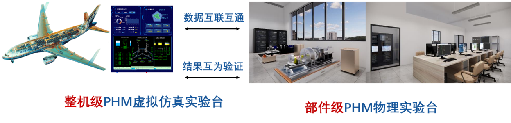
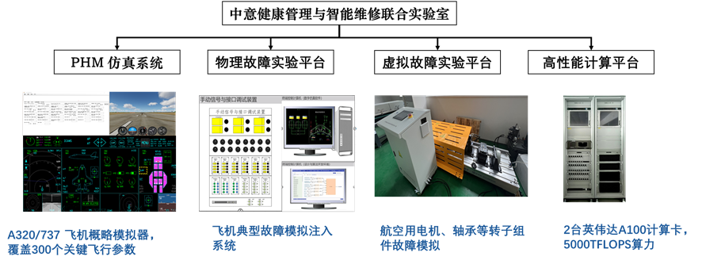
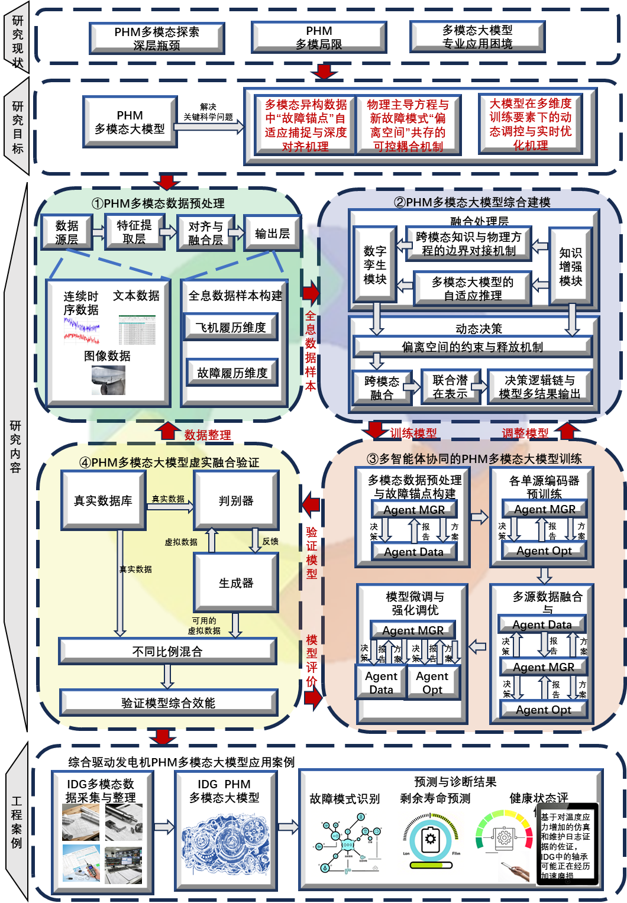
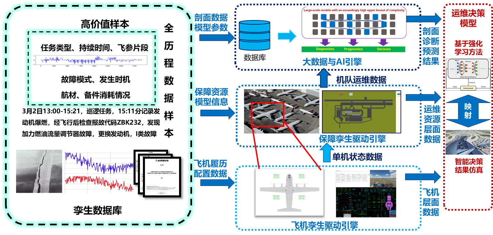
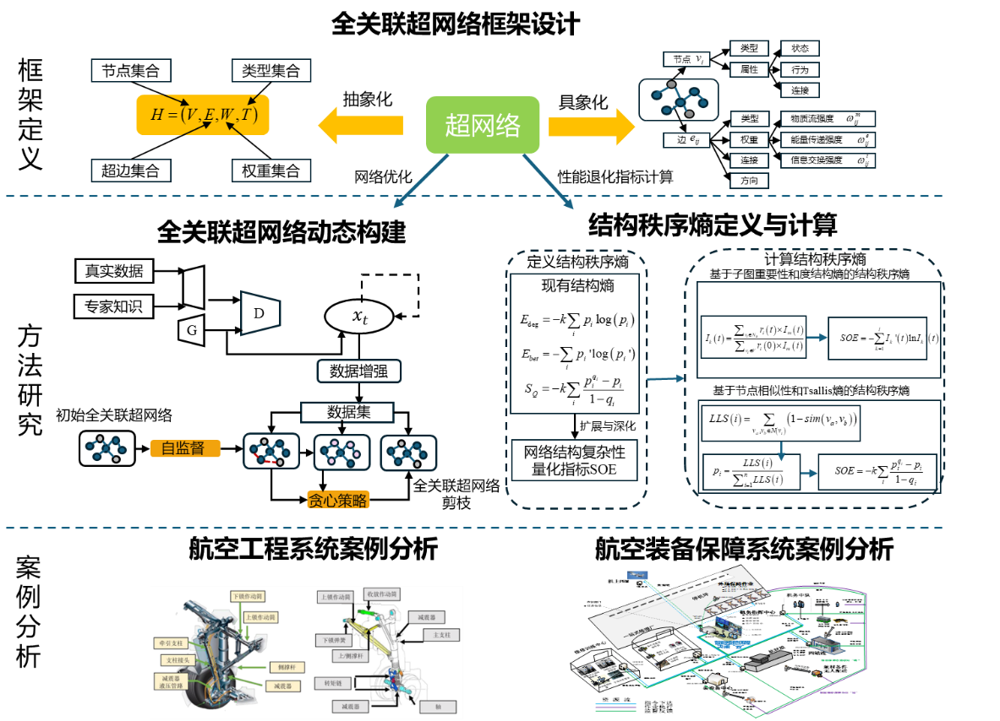

可靠性工程 × 可持续未来 ICRE 2026重磅来袭
第10届可靠性工程国际会议将在杭州举办，聚焦“面向可持续未来的可靠性工程：从经典可靠性到智能韧性系统”。
NEWS
第10届可靠性工程国际会议将在杭州举办，聚焦“面向可持续未来的可靠性工程：从经典可靠性到智能韧性系统”。
GALLERY
中意健康管理与智能维修联合实验室由北航康锐教授与米兰理工大学Enrico Zio教授共同创建，由胡杨副研究员担任执行主任。实验室以“虚实融合、智能驱动、体系赋能”为总体理念，聚焦复杂工程系统的故障预测与健康管理（PHM）、建模仿真、智慧运维、多模态大模型等研究，形成贯通“模型—算法—仿真—验证—应用”的完整研究链路，为航空航天、能源交通、生产制造等系统的PHM与智慧运维提供多学科交叉研究实验的平台。现有教授2人，副研究员2人，副教授1人，博士后3人，研究生13人。

实验室由四大核心模块构成，构成PHM与智慧运维虚实一体化的实验环境：

依托虚拟—物理一体化设计，实验室可开展三类典型实验模式：
目前，实验室已与浙江长龙航空维修工程有限公司建立长期合作关系，获取了10年以上、超过15万架次A320机队飞行参数数据及2000余项真实维修工单；并与中国航空工业、中国船舶、华为2012实验室、工信部电子信息五所等单位共同开展系统PHM与智慧运维研究。同时，实验室与北航杭州国际创新研究院智慧民航科创中心的中法达索卓越教育中心、可靠性数字孪生实验室、机群运行与维修仿真实验室共享资源，实现复杂工程系统的设计—建模—仿真—验证全流程协同。
中意健康管理与智能维修联合实验室以复杂工程系统的健康预测、数字孪生与系统韧性为核心研究主线，面向航空航天、能源交通、智能制造等领域的高端工程系统，构建“多模态智能认知—虚实融合建模—系统可靠保障”的研究体系。实验室重点开展：
本研究方向以多模态大模型为核心，面向复杂工程系统PHM，构建从多源数据处理到模型训练与效能验证的完整技术体系。通过融合传感信号、运行参数、维修记录、环境条件等多维信息，探索PHM任务的认知建模与智能优化方法，为航空航天、能源、交通等领域的高可靠工程系统提供新一代健康管理解决方案。研究内容包括：
（1）PHM多模态数据处理：研究异构数据的清洗、对齐与表征学习方法，构建多源数据标准化流程与高效表示框架，实现不同模态（结构、时序、图像、文本）数据的统一表达与动态融合。
（2）PHM多模态大模型综合建模：构建面向PHM任务的多模态认知大模型，形成由数字孪生模块（物理约束）、知识增强模块（领域知识与专家经验）及二者间的动态融合机制组成的综合建模框架，实现机理与数据的深度协同。
（3）多智能体协同的PHM大模型训练方法：基于多智能体强化学习（Multi-Agent Reinforcement Learning, MARL）和协同优化技术，研究多任务、多场景、多设备的联合训练策略，实现模型在复杂系统下的分布式感知与协同决策能力。
（4）PHM多模态大模型虚实融合验证：通过将仿真生成数据与真实运行数据进行融合验证，在不同任务场景、故障剖面和运行条件下评估模型的鲁棒性、泛化性与工程可用度，构建可持续迭代的PHM智能模型验证体系。
该方向的目标是形成“数据驱动 + 机理约束 + 知识增强 + 智能协同 + 虚实验证”的多模态PHM研究框架，实现复杂工程系统的全生命周期预测性维护与自主智能保障。

本研究方向以数字孪生技术（Digital Twin, DT）为核心，研究复杂工程系统从需求、功能到物理层的全生命周期建模与虚实协同运行机制。通过模型驱动系统工程（MBSE）、多物理场仿真与数据驱动优化算法相结合，构建工程系统运行状态的实时映射与预测性决策框架，支撑高可靠、高效率的智能运维体系。主要研究内容包括：
（1）数字孪生体系结构与多层级建模方法：研究复杂系统的多层级数字孪生体系，包括任务层、系统层、设备层与部件层建模。建立从“需求—功能—逻辑—物理—行为”的映射链路，实现虚实协同与多尺度关联建模。
（2）多物理场建模与运行行为仿真：构建涵盖结构力学、热学、电气与流体等多物理场耦合仿真模型，研究工程系统在真实任务与极端环境下的动态响应与退化规律，为状态监测与寿命预测提供机理支撑。
（3）基于数字孪生的系统运行状态评估与预测：研究数字孪生模型与实时传感数据的融合算法，实现对工程系统健康状态、任务性能与潜在故障风险的动态评估与前瞻预测。
（4）智慧运维与决策优化算法：结合强化学习、多目标优化与演化计算方法，构建基于数字孪生反馈的运维决策模型，研究维修计划优化、任务调度、资源配置与应急恢复策略，实现运维效能与成本的最优平衡。
（5）虚实闭环验证与智能仿真平台开发：构建虚实一体化实验验证平台，实现算法、模型与系统策略的闭环验证。开发基于AnyLogic、Modelica、Python的可扩展智能仿真系统，实现从仿真验证到工程部署的全链路支撑。
该方向形成了从“模型构建—仿真验证—智能决策—闭环优化”的一体化研究链路，为高端工程系统的可用度提升和全寿命周期管理提供系统解决方案。

本研究方向面向航空航天、能源交通及智能制造等典型复杂工程体系，研究系统韧性（Resilience）与确信可靠性（Belief Reliability）的理论框架与工程化分析方法。通过融合复杂网络建模、人工智能分析与数字孪生仿真技术，揭示系统在多扰动、多耦合、多不确定条件下的结构脆弱性与动态演化规律，为高复杂度工程系统提供可量化的安全性与可靠性评估手段。研究内容包括：
（1）复杂网络建模与系统耦合分析：研究复杂系统的结构特征、耦合关系与动态演化规律，构建多层、多域、多尺度的复杂系统网络模型。开展全关联超网络（OmniLink HyperNetwork, OHN）框架设计与动态构建方法研究，实现多实体、多关系、多时间尺度下的高维系统交互建模； 在此基础上，提出结构秩序熵（Structural Order Entropy）的定义与计算方法，用于度量系统结构复杂性与有序度变化，为系统稳健性与演化趋势提供数学刻画。
（2）确信可靠性理论与不确定性量化：发展基于确信理论的系统可靠性建模方法，融合贝叶斯推断、证据理论与模糊逻辑，实现多源不确定信息的综合表达、更新与动态评估。
（3）系统韧性评估与指标体系构建：研究系统在扰动、故障与外部冲击下的恢复能力与稳健性特征，建立韧性量化指标、演化模型与评价体系，为系统可恢复性与任务连续性分析提供支撑。
（4）韧性增强与结构优化策略：面向高风险场景，设计自适应控制与结构重构方法，提出冗余配置与动态恢复决策策略，实现系统层级的韧性提升与风险主动防御。
该方向致力于建立融合网络科学、信息熵理论与AI建模的新型系统可靠性研究范式，支撑国家关键工程系统和基础设施的智能安全管理、抗扰性设计与任务持续能力提升。

三个方向相互支撑，共同构成实验室“智能—仿真—保障”一体化创新体系，为未来高可靠、高智能、高韧性的工程系统提供理论基础与技术支撑。
作为责任导师，指导专业型硕士、双学位硕士及留学生硕士；作为合作导师，联合指导课题组博士研究生与博士后多名，协助完成学术论文写作与算法框架设计等工作。
胡杨课题组隶属于杭州市北京航空航天大学国际创新研究院（北京航空航天大学国际创新学院）智慧民航科创中心，是一支年轻、活跃、富有创新力的科研团队。课题组现有固定研究人员包括副研究员2人、副教授1人、博士后3人，以及在读硕士、博士研究生10余人，形成“导师引领—骨干支撑—梯队协作”的高效科研组织架构。
课题组围绕国家重大战略需求，特别是新一代航空、航天、舰船、智能制造等高端工程系统的智能化运维、数字孪生建模、韧性可靠性分析等核心问题，开展基础理论研究与关键技术攻关。课题组拥有高性能计算集群、工业物联网数据采集平台、故障预测与健康管理（PHM）仿真验证系统、数字孪生建模环境（支持SysML、Modelica、AnyLogic等工具）、复杂网络分析平台等软硬件设施，与浙江大学、香港城市大学、意大利米兰理工大学、巴黎萨克雷大学等国内外高校保持密切学术联系，并与航空工业集团、中国航发、中国航天科技集团、中国商飞有限公司、工信部电子信息五所、华为2012实验室、长龙航空、金鹏航空等单位共同开展科研项目、共建联合实验室等合作，确保科研工作“顶天立地”——既有理论高度，又有工程落地能力。
课题组所在科研平台——“智慧民航科创中心”，由杭州市北京航空航天大学国际创新研究院牵头组建，联合法国国立民航大学（ENAC），是面向国家民航数智化转型战略需求的重要科教协同创新平台。中心聚焦飞机、发动机及机载系统在适航、运维、空管、机场运行等全生命周期环节的智能化升级，构建覆盖“感知—建模—决策—优化”闭环的数智化技术体系，为民航安全、高效、韧性运行提供坚实科研支撑。
中心下设多个功能完备、设备先进的专业实验室，为本课题组在故障预测与健康管理（PHM）、数字孪生、智能运维等方向的研究提供强有力的硬件保障与实验环境：
该实验室是支撑民机PHM大模型研究的核心平台，集成物理实验与虚拟仿真双重能力，支持从部件级退化机理研究到整机级PHM系统验证的全链条实验。平台配备空客A320/波音737全机仿真系统（覆盖12个子系统、300+参数、毫秒级故障注入）、高精度机械故障实验台（50kN液压加载、0.01Nm扭矩传感），以及专用算法开发环境——搭载128核CPU、1TB内存、2×NVIDIA A100 GPU的高性能计算集群，全面支持多模态大模型的训练、微调与推理任务。
依托达索系统3DEXPERIENCE平台（R2024x），构建覆盖飞机全生命周期的MBSE协同研发环境。平台集成CATIA（参数化建模）、SIMULIA（多物理场仿真）、DELMIA（维修流程优化）、ENOVIA（数据协同管理）等工业级软件模块，并配备Abaqus、Simpack、Isight、Magic MBSE等专业工具，支持高保真数字孪生建模、多学科优化与系统架构分析，为课题研究提供国际标准的工程化建模能力。
前者配备高低温老化试验箱（-70℃~+200℃）、半导体热阻测试仪、自动化数据采集系统（LabVIEW/MATLAB），支持关键部件失效机理建模与可靠性验证；后者部署AnyLogic仿真平台、AR沙盘交互系统、动态调度优化引擎，可模拟千架次规模机队在PHM支持下的维修资源分配与运行效能评估，实现从单机健康管理到机群智能运维的闭环验证。
平台已与意大利米兰理工大学共建“中意健康管理与智能维修联合实验室”，由国际PHM权威Enrico Zio教授与北航康锐教授共同领衔，定期开展国际联合培养、学术研讨与课程共建。同时，合作单位提供15万架次飞行数据、2000+真实故障工单及1000+册技术手册，确保研究数据真实、场景典型、成果可落地。
本平台软硬件设施完备、数据资源丰富、国际合作深入，可全面支撑硕士研究生开展高水平、工程化、国际化科研工作，无需依赖外部资源，保障研究高效推进与成果高质量产出。
课题组学术氛围浓厚，实行“不定期例会+个人周报+专题研讨+项目驱动”相结合的培养机制，鼓励学生参与国家级项目、国际会议、企业联合攻关，注重培养学生的系统思维、工程能力、学术表达与团队协作能力。研究生人均参与1-2项国家/省部级课题，人均发表SCI/EI论文1-2篇，部分优秀学生在硕士期间即参与国家重大专项课题研究，承担关键技术研发并在重要里程碑节点进行汇报。
课题组以复杂工程系统的健康预测、数字孪生与系统韧性为核心研究主线，面向航空航天、能源交通、智能制造等领域的高端工程系统，构建“多模态智能认知—虚实融合建模—系统可靠运维”的研究体系。重点开展以下三个方面的研究（详见研究领域页面）：
（1）多模态大模型与智能PHM算法研究，融合AI与机理模型，实现复杂系统健康状态的预测与诊断；典型应用场景包括飞机、高铁、船舶、数控机床、风电、卫星电系统等。学生将掌握PHM领域主流算法（如CNN用于图像故障识别、RNN/LSTM用于时序退化建模、Transformer用于长序列依赖建模），并有机会参与国家重点型号工程系统的PHM系统设计与验证。
（2）数字孪生建模与智慧运维决策优化，通过虚实一体化仿真实现工程系统运行与保障的智能决策；该方向强调系统工程思维与仿真建模能力，适合对复杂系统建模、仿真优化、智能决策感兴趣的同学。课题组已构建航空保障系统、海上平台工程系统等多个数字孪生原型系统，学生可深度参与实际项目开发。
（3）复杂系统韧性与确信可靠性分析，揭示系统结构演化规律，量化系统抗扰与恢复能力；该方向理论性较强，适合数学基础扎实、对复杂系统动力学、网络科学、风险决策感兴趣的同学。研究成果可应用于航空航天体系、电力网络、城市基础设施等关键领域。
三大方向相互支撑，共同构成实验室“智能—仿真—保障”一体化创新体系，为未来高可靠、高智能、高韧性的工程系统提供理论基础与技术支撑。
欢迎计算机科学、自动化、人工智能、机械工程、航空航天工程、系统工程、应用数学等相关专业背景的学生报考。各方向均强调“问题导向、模型驱动、算法创新、系统实现”的研究范式，鼓励跨学科融合。
为确保研究生培养质量与科研项目顺利推进，课题组对学生提出以下基本要求：
课题组实行“个性化定制+项目驱动+成果导向”的培养模式。入学后，导师将根据学生的专业背景、兴趣方向、职业规划，结合课题组在研项目，量身定制培养计划，确保“人尽其才、才尽其用”。
成果要求（根据学生培养方向进行微调）：
课题组将为每位研究生提供充足的科研经费支持、高性能计算资源、国内外学术交流机会，并积极推荐优秀学生赴海外联合培养或攻读博士学位。对于成果突出者，可优先推荐至合作单位（如航空工业、航天科技、华为、商飞等）就业。
▶ 学术深造路径：课题组与多个海外实验室保持合作，支持联合培养与访问交流。优秀硕士/博士可优先获得本校或国内外知名高校（如巴黎萨克雷大学、米兰理工、香港城市大学等，前提是获得CSC奖学金）博士或博士后推荐资格。博士后
▶ 就业路径：毕业生主要去向包括：航空航天院所（如601所、603所、航天一院、五院）、智能制造企业（华为、大疆）、人工智能公司（阿里云、商汤、旷视）、工业软件企业（达索、西门子）、能源电力系统（国家电网、南方电网）等，从事算法工程师、系统架构师、PHM工程师、数字孪生专家、可靠性分析师等岗位。
▶ 创业与交叉发展：课题组鼓励创新思维，支持有创业意向的学生参与科技成果转化，已有毕业生成功创办智能运维、工业AI初创公司。
欢迎有志于投身智能系统、人工智能、系统工程前沿研究的同学积极联系！请将以下材料发送至邮箱： yang_hu@buaa.edu.cn，邮件标题格式：“硕士/博士研究生申请-姓名-本科学校-专业”。
博士后请参考 https://h3i.buaa.edu.cn/info/1141/1391.htm，北航国新院为博士后提供一流的学术指导、科研条件和薪酬待遇。国新院提供A类博士后32万元年薪、B类博士后28万元年薪（均不含政府补贴），以及15万元的科研启动经费（含政府补贴）。同时，博士后可叠加申请杭州市、余杭区地方政府配套补贴，各项补贴累计金额最高可达219万元（详见杭州市余杭区“海创未来·卓越博士后”腾飞计划、杭州城西科创大走廊创新发展专项资金管理办法等，各类政策按照政府最新规定执行）。
所需材料：
我们将对申请材料进行初审，并择优安排线上/线下面试。面试内容包括：基础知识考察、科研潜力评估、英语交流能力、项目设想讨论等。
胡杨教授课题组是一个充满活力、追求卓越、注重实战的科研集体。我们不仅关注论文与专利，更重视学生综合能力的提升与未来职业的发展。在这里，你将接触到最前沿的科研课题，参与国家重大工程，与优秀的同门并肩作战，收获扎实的科研训练与宝贵的人生经历。
如果你热爱科研、勇于挑战、渴望成长，欢迎加入我们！让我们共同探索智能时代的系统运维新范式，为中国高端工程系统的智能化转型贡献智慧与力量！
所在团队长期招收硕士、博士生、博士后，欢迎对故障预测与健康管理、智能运维、工业大数据、复杂系统建模仿真等领域感兴趣，想尝试在人工智能时代运用最酷的AI算法探索解决未知难题的同学加入团队。